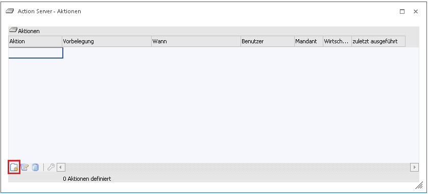
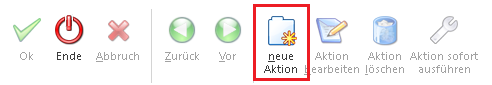
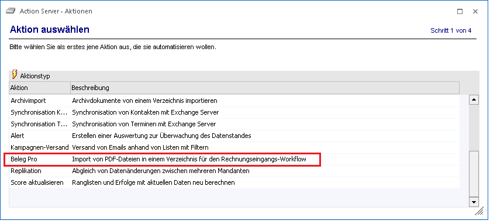
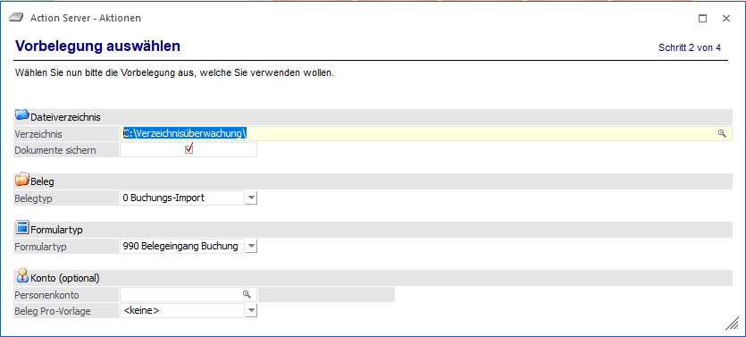
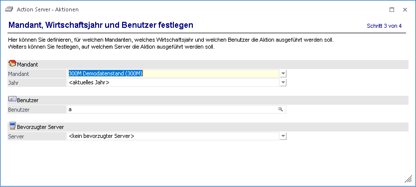
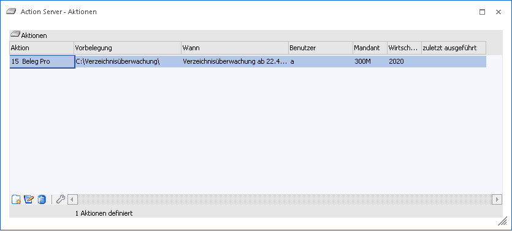
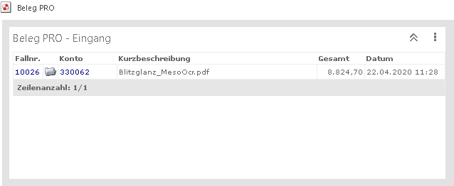

Der Eingang mittels "Beleg PRO" kann ebenfalls über den Actionserver und einer sogenannten "Verzeichnisüberwachung" erfolgen.
Dazu muss der Menüpunkt "Action Server - Aktionen" im Modul "START" unter
1 Action Server
1 Definition
geöffnet werden.


Anschließend kann eine neue Aktion mit dem Ribbon- bzw. Tabellenbutton "neue Aktion" hinzugefügt werden.
Der Inhalt der Tabelle wird mit den verschiedenen zur Verfügung stehen Aktionen gefüllt. Für die Verzeichnisüberwachung muss die Aktion "Beleg Pro" angewählt werden.

Anschließend kann das Verzeichnis, Belegtyp, Formulartyp und ein Personenkonto angegeben werden.

Ø Verzeichnis
In diesem Eingabefeld kann das Verzeichnis, welches überwacht werden soll bzw. die PDF-Dateien abgestellt sind/werden eingegeben oder mittels Matchcode (Windows-Dateiexplorer) ausgewählt werden.
Ø Dokumente sichern
Wenn diese Checkbox gesetzt wird, werden im angegebenen Verzeichnis die Ordner "Erfolg" und "Fehler" angelegt. Jede PDF-Datei, welche über die Verzeichnisüberwachung korrekt mit dem Beleg Pro Wizard verarbeitet werden konnte (im Hintergrund) wird in das Verzeichnis "Erfolg“ verschoben. Falls es beim Eingang zu einem Fehlerfall kommen sollte, dann landet diese PDF-Datei im Ordner "Fehler".
Ø Belegtyp
ü 0 Buchungs-Import
Es wird davon
ausgegangen, dass das abgeholte Dokument im Anschluss als Buchungssatz übergeben
wird
ü 1 Batchbeleg
Wenn dieser
Eintrag gewählt wird, wird im Anschluss ein FAKT-Beleg erzeugt
Ø Formulartyp
Hier kann ein Formulartyp eingetragen werden, welcher für die Verzeichnisüberwachung bzw. dem automatischen Eingang, angestoßen werden soll.
Ø Personenkonto (optional)
Die Eingabe eines fixen Kreditors ist optional. Wenn jedoch ein Personenkonto angegeben ist, dann wird jede PDF-Datei, welche von dem Verzeichnis abgeholt wird, der Belegeingang mit diesem Kreditor erfasst.
Wenn kein Konto angegeben ist, wird der Kreditor aus dem Beleg ausgelesen und übernommen.
Wenn anschließend noch einmal "Vor" angewählt wird, wird wechselt man zum letzten Schritt, bei welchen Mandant, Jahr, Benutzer und der bevorzuge Server angegeben werden kann.

Wenn die Eingaben soweit erfolgt sind, kann die Aktion mittels Ribbon-Button "OK" fertig gestellt werden. Das Fenster wechselt wieder zum ersten Schritt und die Definition sollte ersichtlich sein.

Wenn jetzt der Action Server gestartet wird (manuell oder als Dienst), wird das angegebene Verzeichnis überwacht. Immer wenn Datei in das Verzeichnis abgestellt wird, wird diese nach kurzer Wartezeit aus dem Verzeichnis gelöscht und der Eingang ist fertig gestellt.
Hinweis
Es werden nur PDF-Dateien abgeholt und es ist keine weitere Beschlagswortungsdatei notwendig.
Es sollte dann ein Fall mit dem eingetragenen Workflow lt Formulartyp geschrieben worden sein, welcher zur weiteren Bearbeitung herangezogen werden kann. Wenn der Standard-Formulartyp mit dem Standard-Workflow verwendet wurde, sollte der Fall auch im Cockpit "Beleg PRO" ersichtlich sein.

Weitere Details zur Bearbeitung der einzelnen ausgelesenen Felder können im Kapitel Beleg Pro - Import nachgelesen werden.
Ø Beleg Pro-Vorlage
Hier kann entweder die Option <keine> bzw. <Standard> oder eine fix vordefinierte Beleg Pro Vorlage des angegebenen Personenkontos ausgewählt werden. Je nachdem wird beim Beleg Pro Eingang über den Actionserver diese Vorlage berücksichtigt.